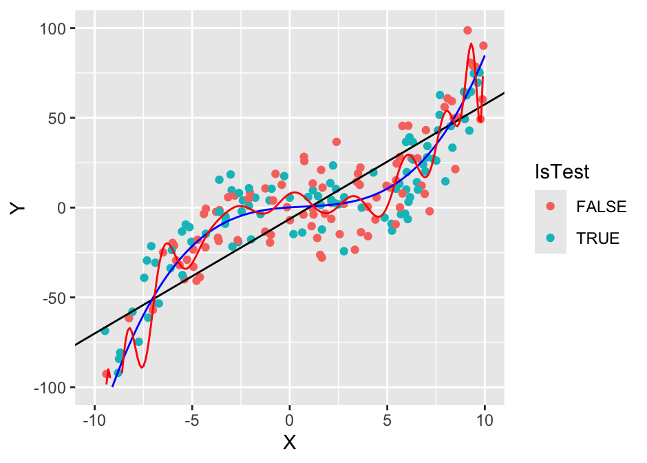
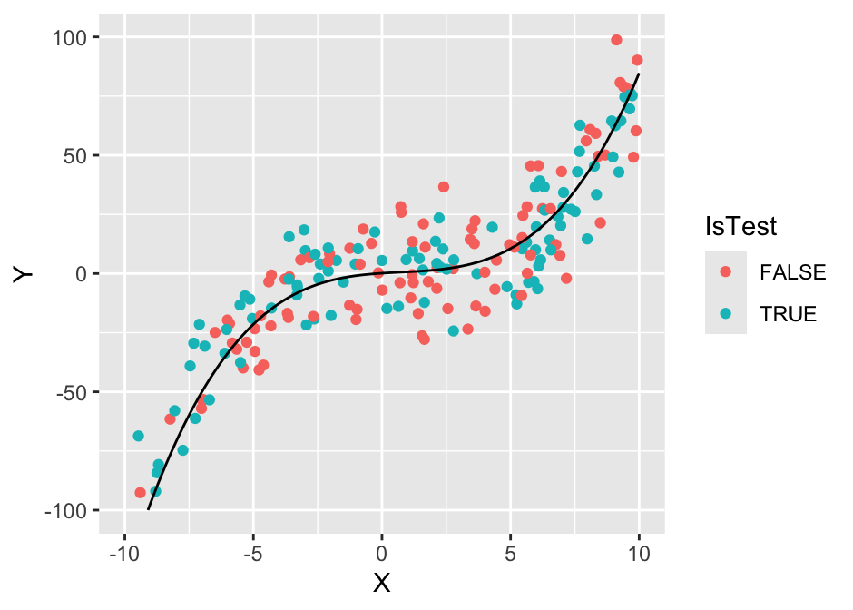

Chapter 10 Predictive modelling
10.1 Introduction
For the purposes of this text, we will define predictive modelling as a family of practical problems where the focus is on utilizing current and historical data to predict the outcome of future or unknown events. This is a very broad family - in fact, it encompasses the majority of practical data analysis problems, for example, classifying images, comparing groups, forecasting stock prices, automated translation, making recommendations, customer profiling, personalized advertising, etc.
Note that predictive modelling is also referred to as supervised learning (learning a functional relationship based on example input-target variable pairs) in contrast with unsupervised learning (no variable is the target variable - our goal is to learn structure of the data - see Chapter 8 and semi-supervised learning (some observations are labelled and some are not and we want to utilize both).
Note that predictive modeling is not restricted to machine learning models and techniques. Predictive modelling, while traditionally a more machine learning task, utilizes methods from statistics, machine learning, and computer science.
Key terms
Before we discuss predictive modelling in more detail, let us define some common terms. The main goal of predictive modelling is to define a relationship between known data and the unknown outcome that we are trying to predict. Looking at it from a more abstract perspective, we are trying to find a useful functional relationship between what we know and what we don’t know. We will call this functional relationship a model. While it might in some cases be possible to determine a model by hand, we will in most cases be using a training algorithm to produce a model from our data. This process is called training a model, learning, fitting a model or inference, depending on whether we are in a machine learning, statistical or some other community.
Every training algoritm has some degree of freedom or flexibility to adapt to the given data - without that, learning would not be possible. We will refer to this flexibility as model parameters and we will make a distinction between parameters that will be fit automatically and parameters that the user has to set (tunable parameters). This distinction is purely practical - every parameter can be a tunable parameter or just a parameter, depending on how we set up our training process. For example, coefficients in linear regression (or weights in a neural network or splits in a decision tree) are typically trained on data and not set by the user, on the other hand, the regularization parameter in linear regression (or the number of layers in a neural network or the splitting criterion in a decision tree) is often set by the user.
We’ll call the data that we use to train our model training data to distinguish them from data that are used to test the model’s performance - the test data or holdout data. When we introduce an intermediate step of setting tunable parameters automatically, we often refer to the data that are used to test the model’s performance for a particular setting of the tunable parameters as the validation data. Within the data we also distinguish between the known data (or data that will be known when making a prediction) and data that will be unknown (but are available in some historical cases, which we use to train the model). The latter are called target variables (or labels, classes, input variables, dependent variables) while the former are called input variables (or features, attributes, predictors, independent variables). We will refer to the basic unit of prediction (one set of inputs and the target) as an observation (or instance, example).
An illustrative example
Let’s reinforce the terms from the previous section with an illustrative example. We’ll use a simple data set with 200 observations and 2 variables, \(X\) and \(Y\). The task is to predict the value of \(Y\) from the value of \(X\). That is, we have a single input variable (\(X\)) and a single target variable (\(Y\)). Before we proceed, we’ll randomly split the dataset into two subsets of equal size. We’ll use one set to train our model and the other to test its performance.
# Simple linear regression example ---------------------------------------------
library(ggplot2)
# read dataset
dataset <- read.table("./data/simpleReg.csv", sep = ",", h = T)
# train-test split
set.seed(0)
idx <- sample(1:200, 100, rep = F)
dataset$IsTest <- T
dataset$IsTest[idx] <- F
# plot the data
g1 <- ggplot(dataset, aes(x = X, y = Y, colour = IsTest)) + geom_point()
plot(g1)Now we have to choose a training algorithm that we’ll use to produce a model for the process that generated this dataset. We’ll use simple least-squares linear regression. This tranining algorithm assumes that the functional relationship between \(X\) and \(Y\) is \(Y_i = kX_i+n + \epsilon_i\). Or, in simpler terms, we assume that the points lie on a straight line and we account for the deviations with the residual terms \(\epsilon_i\). Clearly, the data suggest a non-linear relationship and that linear regression is not the best choice, but we’ll ignore that for now.
The next step is to run the linear regression algorithm to find the best values of our two model parameters slope (\(k\)) and intercept (\(n\)). In the case of least-squares linear regression, best is defined as the one that minimizes the sum of squared residuals \(\epsilon_i\). That is, within the black-box of least-squares regression we’d find just a simple optimization algorithm:
# train the model
train_data <- dataset[dataset$IsTest == F,]
test_data <- dataset[dataset$IsTest == T,]
lr <- lm(Y ~ X, data = train_data)
n <- lr$coefficients[1]
k <- lr$coefficients[2]
cat(sprintf("n = %.2f, k = %.2f\n", n, k))## n = -6.31, k = 6.38g1 <- ggplot(dataset, aes(x = X, y = Y, colour = IsTest)) + geom_point() + geom_abline(slope = k, intercept = n)
plot(g1)We can see that the best linear model is probably not the best model for this data, but it still captures part of the relationship between \(X\) and \(Y\) and could be used to predict new values better than the naive approach of just predicting with the mean. Note that in practice the term model is used interchangeably for the training algorithm and the model it produces (in our case \(Y_i = 6.65X_i - 8.60\)). That is, the term linear regression model is often used to refer to the entire algorithm of assuming a liner relationship and finding the parameters using optimization.
Now we’ll try to produce a better model. We’ll use the least-squares algorithm, but we’ll add the squared and cubic terms \(X^2\) and \(X^3\). This is also called polynomial regression:
lr <- lm(Y ~ poly(X, 3), data = train_data)
x <- seq(-10, 10, 0.1)
y <- predict(lr, newdata = data.frame(X = x))
g1 <- ggplot(dataset) + geom_point(aes(x = X, y = Y, colour = IsTest)) + geom_abline(slope = k, intercept = n) +
geom_line(data = data.frame(x = x, y = y), mapping = aes(x = x, y = y), colour = "blue")
plot(g1)The cubic polynomial appears to be a much better fit for the training data and the test data. Let’s check if that is indeed the case:
lr <- lm(Y ~ X, data = train_data)
y <- predict(lr, newdata = test_data)
e1_te <- mean((y - test_data$Y)^2)
y <- predict(lr, newdata = train_data)
e1_tr <- mean((y - train_data$Y)^2)
lr <- lm(Y ~ poly(X, 3), data = train_data)
y <- predict(lr, newdata = test_data)
e2_te <- mean((y - test_data$Y)^2)
y <- predict(lr, newdata = train_data)
e2_tr <- mean((y - train_data$Y)^2)
cat(sprintf("test and training data mean squared error for line: %.2f / %.2f and poly: %.2f / %.2f\n", e1_te, e1_tr, e2_te, e2_tr))## test and training data mean squared error for line: 462.06 / 477.82 and poly: 184.59 / 229.72The numbers confirm that the polynomial regression model has lower training and test error. The latter implies that the polynomial regression model will better generalize to new or unseen examples and should be, in terms of predictive performance, used instead of the linear regression model.
To illustrate another important concept, we’ll also use a 25th degree polynomial model.
lr <- lm(Y ~ poly(X, 3), data = train_data)
x <- seq(-10, 10, 0.1)
y1 <- predict(lr, newdata = data.frame(X = x))
lr <- lm(Y ~ poly(X, 25, raw = T), data = train_data)
y2 <- predict(lr, newdata = data.frame(X = x))
g1 <- ggplot(dataset) + geom_point(aes(x = X, y = Y, colour = IsTest)) +
ylim(-100, 100) +
geom_abline(slope = k, intercept = n) +
geom_line(data = data.frame(x = x, y = y1), mapping = aes(x = x, y = y1), colour = "blue") +
geom_line(data = data.frame(x = x, y = y2), mapping = aes(x = x, y = y2), colour = "red")
plot(g1)## Warning: Removed 7 rows containing missing values or values outside the scale range
## (`geom_point()`).## Warning: Removed 9 rows containing missing values or values outside the scale range
## (`geom_line()`).## Warning: Removed 4 rows containing missing values or values outside the scale range
## (`geom_line()`).
lr <- lm(Y ~ poly(X, 25, raw = T), data = train_data)
y <- predict(lr, newdata = test_data)
e1_te <- mean((y - test_data$Y)^2)
y <- predict(lr, newdata = train_data)
e1_tr <- mean((y - train_data$Y)^2)
cat(sprintf("poly (25): %.2f / %.2f\n", e1_te, e1_tr))## poly (25): 71336.91 / 162.80We can see that the 20th degree polynomial model, which has 17 more parameters than the 3rd degree polynomial model, is able to fit the training data better. However, its performance on the test data is worse! This is an important concept that we call overfitting - the model was too expressive for the amount of data we have and it started fitting not just the underlying true functional relationship but also the noise in the data. An extreme example of this would be using a 100th degree polynomial, which would be able to perfectly fit the training data, but it would perform very poorly on test data.
Finally, let’s use a \(k\)-nearest neighbors model with \(k = 10\). In other words, we assume that the value of an observation is the average of the 10 nearest points:
# we'll manually code k-nearest neighbors for this simple example
tmp <- dataset
tmp$PredictedY <- NA
knearest <- function(x, df, k) {
mean(df[rank(abs(df$X - x)) <= k,]$Y)
}
for (i in 1:nrow(tmp)) {
tmp[i,]$PredictedY <- knearest(tmp$X[i], train_data, 10)
}
y <- tmp[tmp$IsTest == T,]$PredictedY
e1_te <- mean((y - test_data$Y)^2)
y <- tmp[tmp$IsTest == F,]$PredictedY
e1_tr <- mean((y - train_data$Y)^2)
cat(sprintf("knn (10): %.2f / %.2f\n", e1_te, e1_tr))## knn (10): 214.64 / 257.63y <- c()
x <- seq(-10, 10, 0.1)
for (pt in x) {
y <- c(y, knearest(pt, train_data, 10))
}
g1 <- ggplot(dataset) + geom_point(aes(x = X, y = Y, colour = IsTest)) +
ylim(-100, 100) +
geom_line(data = data.frame(x = x, y = y), mapping = aes(x = x, y = y1))
plot(g1)## Warning: Removed 7 rows containing missing values or values outside the scale range
## (`geom_point()`).## Warning: Removed 9 rows containing missing values or values outside the scale range
## (`geom_line()`).
The performance of the 10-nearest neighbor model is relatively good, only slightly worse on the test set than the cubic polynomial model.
10.1.1 The process of predictive modelling
In general, predictive modelling is a complex task that requires mathematical, statistical, computational and programming knowledge and skills. However, in most practical scenarios we can get reasonably good results by following a simpler systematic process and utilizing existing tools and libraries. The process can be divided into three main steps:
- Analyze the given scenario and identify into which case(s) of predictive modelling it falls under.
- Based on desired predictive quality and other practical considerations, select candidate training algorithms.
- Estimate the error of the models produced by the training algorithms and select the best one.
This process allows us to handle most practical predictive modelling scenarios and will almost always be used as a starting point. Steps (1) and (2) rely on our knowledge of and practical experience with different approaches to modelling - we will introduce a few in the next section. And later in the chapter we will see that we can handle (3) in a systematic and relatively general way, treating the training algorithms and models as black-boxes with tunable parameters.
Before we proceed, let us briefly discuss some of the most common reasons why the process could fail. That is, why we would not be able to use existing algorithms and just choose the best one:
None of the existing algorithms (or implementations) apply to our case: Some cases are very common in predictive modelling. So common, that they have special names and entire fields dedicated to them. For example, when the target variable is categorical (classification), numerical (regression) or ordinal (ordinal regression). If our problem fits into one of these standard paradigms, we’ll have many different training algorithms to choose from. However, if it doesn’t, for example, if we have non-standard input or target variables, such as a matrix or a graph, we will either have to translate our problem to a standard case or produce some methodological innovation. The latter typically requires in-depth machine learning, statistical, and/or computational knowledge and skills and is in the domain of data science experts and researchers.
Models trained with existing algorithms make poor predictions, are computationally infeasible, not transparent enough, etc.: In the best-case scenario this again requires methodological innovation. In the worst-case scenario it might be infeasible or impossible to solve the problem with the data and resources at our disposal.
To summarize - this engineering approach to predictive modelling that we’ll focus on is very systematic and can be applied in most cases. However, there are cases where it can’t be applied or where it doesn’t produce good-enough results. Such cases are a few orders of magnitude more difficult.
10.2 Commonly used prediction models and paradigms
If we have some experience with statistics or machine learning, we already know that there exist many different algorithms for predictive modelling - linear regression, decision trees, neural networks, etc. This already hints at one of the fundamental principles of modelling - there is no single best algorithm or model!
A well-known theorem, known as the no-free-lunch theorem for machine learning, states that no single algorithm that is better than all other algorithms over all possible problems. The theorem in a way assumes that all functional relationships are equally probable, so it does not apply to applied predictive modelling. In practice, in the real world, some functional relationships are more common than others. It does, however, imply, that in any scenario or for any dataset, a more specialized algorithm (one that exploits the structure of the problem) will outperform a more general algorithm.
On a related note, an important thing to remember is that by selecting a particular training algorithm, we limit ourselves to a subset of possible models that the training algorithm can produce. For example, as we saw before, by choosing least-squares regression, we limit ourselves to a line or, more generally, a hyperplane. This is also known as the inductive bias of a training algorithm. Some algorithms have a very good inductive bias - the functional relationships they prefer are those that we more commonly encounter in practice, overall or in a particular application domain. These are the algorithms that are typically implemented in statistical or machine learning libraries.
So, it is inevitable that we have many general-purpose predictive modelling training algorithms and a plethora of specialized methods, each with its own advantages and disadvantages. Taking into account that there are also other practical considerations, such as model simplicity, time complexity, etc. (covered in more detail later in the chapter), we can conclude that a practitioner must familiarize himself with many different training algorithms and models. Here we briefly discuss a few of the most common ones:
Generalized linear models
Linear regression is a special case of generalized linear models, which generalize the linear combination approach to other types of target variables, such as logistic regression for classification and Poisson regression for count data. Linear models are computationally simple, relatively easy to interpret and are less likely to overfit, due to their limited expressiveness. Linear models can also be used to model non-linear relationships by transforming the input space. This is the idea behind polynomial regression, spline models, etc.
Decision trees
Decision trees are a broad family of models, which are based on partitioning the input variable space into different regions. The prediction of a new observation is based on the values of other observations in its region. The model is typically derived via recursive partitioning of the input space and can be represented with a tree structure. This makes decision trees very useful when model interpretability is important. In fact, (small) decision trees are the most easy-to-understand representation for non-experts.
Neural networks
The prototypical artificial neural nework is the feed-forward neural network. In particular, the multi-layer perceptron. It is based on the input layer followed by zero or more hidden layers of interconnected neurons and the output layer. Every neuron is typically connected with one or more neurons from the next layer and the connections are weighted. Typically, every neuron also has a threshold or activation function that determines under what inputs the neuron will activate its output.
In essence, a feed-forward neural network is a very flexible functional representation of the relationship between the inputs and outputs. In fact, they are capable of approximating almost all functional relationships we’ll encounter in practice, given enough data. Artificial neural networks are more complicated to apply and have more parameters to tune than most other models, including the topology (number of layers, how they are interconnected, etc.). Due to their complexity, they are also more prone to overfitting.
Artificial neural networks have recently again grown in popularity with modern deep learning approaches such as convolutional neural networks. These approaches perform particularly well on tasks where we have large amounts of observations but very little understanding of what the functional relationship might be, such as image recognition, video analysis, speech recognition, natural language processing, etc.
Kernel-based learning
An alternative to explicitly specifying the functional relationship is to say that the target variable of new or unseen observations is likely to be similar to the target variables of nearby observations. In essence, similar observations should have similar target variables. The nearest-neighbors approach from the introductory example is a representative of this approach.
Similarity-based learning is an elegant and powerful concept and the basis for many different training algorithms. Of course, in order to transfer this concept into practice, we must be able to define what we mean by similar (or a kernel). Many different kernels exist and while some are more popular than others, choosing the appropriate kernel and its parameters is problem-specific and should be treated as any other model tuning parameter. Kernel-based methods also include Support Vector Machines and Gaussian Processes. More traditional methods such as PCA and even linear regression can also be interpreted as kernel-based methods.
Note that with this type of learning the functional relationship can become arbitrarily complex/refined as we get more observations. We call such models non-parameteric models. As opposed to parametric models such as linear models or neural networks, where the functional relationship remains fixed, only the parameters/weights change. Decision trees are also an example of a non-parametric model. Non-parametric models tend to require more data and are more likely to overfit, but they are also more convenient, because we don’t have to specify a functional form for the relationship between the inputs and outputs.
Ensemble learning
Instead of using a single model, we can often get a better result by combining several models or, as it is commonly known in machine learning circles, by ensemble learning. Different models can each learn better different parts of the relationship. Methods like random forests are based on deliberately training biased models on subsets of the observations and input data to reduce overall variability and improve prediction quality.
Common predictive modelling paradigms
Some distinct predictive modelling patterns (paradigms) are so common that we give them names. We already mentioned the two most common ones, standard classification (target variable is categorical) and standard regression (target variable is numerical), where by standard we refer to having several independent and identically distributed observations, each with one or more numerical input variables.
If we can recognize that our predictive modelling case fits into a well-known paradigm, our job will typically be easier, because we can utilize existing methods and implementations. Note that common predictive models are designed for classification and/or regression (in fact all of the models that we listed in this section). This is also due to the fact that most paradigms can be reduced to classification or regression, albeit possibly with a loss of relevant problem structure.
Other common paradigms include:
multivariate analysis and prediction: When we have \(k > 1\) target variables. This can be reduced to \(k\) independent classification/regression problems, but we lose information that is potentially contained in the dependency structure.
multi-label classification: Predicting not just one category (classification) but a subset of categories (labels) associated with an observation. That is, predicting which labels the observation has. Again, this can be reduced to an independent binary (yes/no) classification problem for each label (we lose dependency structure) or a single classification problem over the cartesian product of the labels (computationally infeasible due to exponential growth in the number of labels).
multi-instance learning: Instead of individual observations, observations are grouped in labeled bags, each with one or more observations. The label of the bag depends on the (unobserved) labels of its instances, for example, positive if at least one is positive and negative otherwise. The objective is to learn and predict labels of individual observations and/or bags.
online learning: Sometimes we do not want to or even can’t learn from all the past observations together (batch training). For example, when storage is limited, when computational resources are limited or when we are dealing with a varying functional relationship. In such cases, we might prefer models that are able to update their functional relationship with a single observation. There exist online variants of many standard classification and regression models.
time-series forecasting: When there is also a temporal component to the observations, we typically refer to the data as time-series data. Many specialized algorithms exist for such data, but time-series forecasting can also be viewed as a special case of classification/regression, where we can only use data that are available prior to the time point where the prediction has to be made. A special or related case is data stream mining. Data stream mining focuses on extracting patterns or making predictions from continuous and often rapid streams of data. Additional restrictions that typically apply are that data points can be read only once and that computing and storage capabilities are limited. Therefore, online learning approaches are often utilized in data stream mining.
10.3 Model selection
In this section we will focus on the most important subtask, selecting the model that has the best predictions. Note that in practice, the best model for us might not be the one that gives the best predictions - we discuss this in the next section - but for now we focus on models’ predictive quality.
First, we let us unwrap the statement selecting the model that has the best predictions. Best predictions where? And what do we mean by best? Making this statement precise is key to desiging a proper model selection process for the problem at hand.
We can provide a very general answer to the where question - we want the model that will perform the best not on the data we have, but on future on unseen observations. The model that best generalizes the underlying functional relationship, not the observed relationships in the data. The what do we mean by best question, however, has to be answered on a case-by-case basis, because it depends highly on what we are trying to achieve. So, every model selection process has two main components: (1) choosing the appropriate measure(s) of quality and (2) estimating the expected value of those measures on future or unseen observations.
Measuring predictive performance
Our choice of measure of predictive preformance (also known as prediction error, loss, score) should depend on what we are trying to achieve. There are, however, some common scenarios and commonly used measures.
For regression and when we are evaluating point predictions of the mean, mean squared error (MSE) is the natural choice. However, if we are interested in predicting the most likely values, MSE may be a very poor choice. To understand why we can revisit the Gamma distribution example from Chapter 8: if the error or noise in our target variable is very skewed, then there will be a large difference between the mean and the most likely value. Models that are trained by minimizing MSE will estimate the mean and therefore not the most likely value. In such cases it is better to use a measure that is less sensitive to extreme values, such as mean or median absolute error.
A more general measure for regression is the logarithmic scoring rule or log-score. The log-score is proportional to the logarithm of the model’s density prediction for the true value of the target variable, so it is proportional to the log-likelihood of the model. Assuming that our error or noise is normally distributed, the log-score and MSE are equivalent. Unfortunately, the log-score for regression can only be used if the models we are evaluating give density predictions and not just point predictions. The MSE can be viewed as a reasonable approximation to the log-score when density predictions are not available.
For classification and when the models output only the predicted target value (that is, crisp 1/0 and not probabilistic predictions), we are limited to computing the classification accuracy - the ratio of correctly predicted values. If not all mistakes are equal, however, we might prefer the false positive and false negative rate or, in general, a confusion matrix or measures derived from it.
Unless we are restricted to crisp preditcions for some other reasons, we should rarely prefer accuracy over a measure that evaluates the probabilistic predictions output by the model. In particular, we should use the log-score or, alternatively, the Brier score or [quadratic scoring rule(https://en.wikipedia.org/wiki/Scoring_rule#Brier/quadratic_scoring_rule). Classification accuracy is flawed - computing it for classifiers that output probabilistic forecasts requires us to set a threshold that determines which probabilities consitute as 1s and which as 0s (0.5 being the natural choice in binary classification). This threshold may introduce a bias but more importantly, we can see how in order to get the optimal accuracy, we only need to be above the threshold when and only when the hypothetical optimal probabilistic classifier is above the threshold. That is, we can hypothetially take the optimal classifier and change its probabilities to any value and, as long as we don’t cross the threshold, we will retain the same classification accuracy. This implies that classification accuracy does not force classifiers to output optimal probabilistic forecasts in order to maximize their accuracy, which is not a desirable property.
Other, more specialized predictive modeling paradigms may prefer other measures of predictive performance. When encountering a new measure or new scenario, we should always review what we are trying to achieve and if the chosen measure actually measures what we are trying to achieve.
Estimating how performance will generalize
We now assume that we have decided on the measure of predictive performance we want to use. Our goal now is to estimate how our model will perform on new or unseen examples. Our estimation is typically based on computing the measure on a finite number of test observations. For example, the average of squared errors if we are interested in estimating the MSE. The first and most important thing is that the model’s performance on test cases is just an estimate of its expected performance on new or unseen examples.
Indeed, what we are faced with is a proper statistical estimation problem. The average performance on the test data will differ from the unknown expected performance that we are trying to estimate due to bias and variability. We have already pointed out one possible source of bias - if we test on the data we trained on, we introduce a positive bias - we will on average overestimate the model’s quality! This is very undesirable, so as a rule, we should never test on data that the model was trained on!
In practice, we, once we select the best training algorithm, use that algorithm on all available data to produce the model that will be used in production. Note that such testing would have a negative bias - we will on average underestimate the model’s performance, because it uses less training data in testing than it will use in production. However, such negative bias typically of less concern than a positive bias.
Even if we don’t have a background in statistics, we will agree that the more (independent) test observations we have, the less variability there will be in our estimate of the model’s performance. The same applies to model training - the more training examples we have, the less variability there will be in our estimates of model parameters. That puts us in a predicament - if we use more data for testing, we’ll get a better estimate of performance but for a model that is more likely to be far away from the model trained on all data. On the other hand, if we use more data for training, we’ll have better estimates of model parameters, but more uncertainty in how well the model will perform.
So, unless we have large amounts of data, using a training-test split is not the best idea. Instead, we should use cross-validation - a process that fully utilizes all data for training and testing, without violating the rule of not using the same data for training and testing. The key idea is to randomly partition the data into \(k\)-folds of approximately equal size (hence \(k\)-fold cross-validation) and repeating \(k\)-times, once for each fold, the process of training on all but that fold and testing on that fold. Finally, we average the errors across all observations. Because there is some randomness involved in partitioning the data, it is important to use the same partitions for all models, so that we do not introduce unnecessary variability. Practitioners often also repeat \(k\)-fold cross-validation \(m\) times for different partitions, to further reduce variability.
Non-standard cases: There are cases where cross-validation does not apply. In particular, when the observations are not independent, as is the case with temporal or spatial data. The latter is beyond the scope of this chapter, while in the former case we can rely on a rolling window approach - we test on every observation but for each observation we train only on observations that precede it temporally.
10.4 Practical considerations
Although predictive model quality is typically synonymous with its prediction quality, there are many other practical things that we may need to consider when choosing the best model for the task at hand:
Model interpretability: Being able to understand or explain what the model does is sometimes as important if not more important than its predictive quality. For example, in sensitive high-risk domains where the decision maker and person responsible is a non-technical non-data science expert, such as medicine or business. In such cases we might prefer decision tables, decision trees or linear models over neural networks or ensembles. Model explanation is an important and active subfield of machine learning and statistics (see Further reading and references).
Computational complexity, computation time: We will often have limitations on how long we can run the training or prediction part of our model. Sometimes the issues can be resolved with more resources, if available. However, if the computational complexity of the algorithm prevents us from scaling to the size of our problem, we must either make a compromise (reduce the dimensionality of the problem) or choose another training algorithm.
Cost of implementation and maintenance: The practical cost of implementing a novel method or integrating an unsupported third-party implementation is very high. When predictive quality is crucial and every improvement results in substantial gain, for example, algorithmic trading, the benefits of better predictive quality will outweigh the practical costs of implementing, integrating and/or buying the software. In most other cases, the benefits of having a well-supported and easy-to-use library outweigh some loss in predictive quality, transparency and/or speed compared to the state-of-the-art new but more difficult to use method.
The above also applies when we are developing new methodology. We should always consider what is important to our user base and if we want others to use our methods, we must make them as easy to use as possible.
10.5 Putting it all together with R
We’ll apply what we have learned to an interesting dataset from the paper Stengos, T., & Zacharias, E. (2006). Intertemporal pricing and price discrimination: a semiparametric hedonic analysis of the personal computer market. Journal of Applied Econometrics, 21(3), 371-386.
The dataset contains PC price and specifications from the 90:
## price speed hd ram
## Min. : 949 Min. : 25.00 Min. : 80.0 Min. : 2.000
## 1st Qu.:1794 1st Qu.: 33.00 1st Qu.: 214.0 1st Qu.: 4.000
## Median :2144 Median : 50.00 Median : 340.0 Median : 8.000
## Mean :2220 Mean : 52.01 Mean : 416.6 Mean : 8.287
## 3rd Qu.:2595 3rd Qu.: 66.00 3rd Qu.: 528.0 3rd Qu.: 8.000
## Max. :5399 Max. :100.00 Max. :2100.0 Max. :32.000
## screen cd multi
## Min. :14.00 no :3351 no :5386
## 1st Qu.:14.00 yes:2908 yes: 873
## Median :14.00
## Mean :14.61
## 3rd Qu.:15.00
## Max. :17.00Although this is probably not true, we’ll assume, for the purposes of this analysis, that all observations are independent observations from the distribution of computers in that time period.
The goal is to predict PC price and the input variables we’ll use are …the clock speed (in MHz) of the 486 processor, the size of the hard drive (in MB), the size of the RAM (in MB), the size of the screen (in inches), the presence of a CD-ROM, the presence of a multi-media kit that includes speakers and a sound card...
Now we are ready to proceed. First, before we do anything, we will set aside 1000 randomly chosen observations. These will be used as the final test set after we have decided on the best model. We can afford this, because we have a lot of observations (relative to the size of the input space). We will also recode the yes/no variables as binary:
set.seed(0)
idx <- sample(1:nrow(df), 1000, rep = F)
df$cd <- as.numeric(df$cd)
df$multi <- as.numeric(df$multi)
df.main <- df[-idx,]
df.test <- df[ idx,]Next, we identify that the target variable is numerical, so we are dealing with a regression problem. Some input variables are numerical and some are binary, which means that we have a standard regression problem.
To minimize the amount of effort, we’ll utilize the caret package for R. The package includes many functions and interfaces over 100 different classification and regression models.
We will consider 3 different regression training algorithms - linear regression (no tunable parameters), a stochastic gradient boosting (we’ll run it over a range of values suggested by caret) and k-nearest neighbors (we’ll test it across several manually selected values of \(k\)).
We’ll choose (root) mean squared error as our measure of quality, because our objective is to get the best predictor of the mean. And we’ll estimate how the models’ errors will generalize using 10 repetitions of 10-fold cross-validation:
## Loading required package: lattice# setting-up the cross validation
fitControl <- trainControl(## 10-fold CV
method = "repeatedcv",
number = 10,
repeats = 10)
all <- NULL
# gradient boosting
set.seed(0) # set seed to get the same folds for all models
fit_gb <- train(price ~ ., data = df.main,
method = "gbm",
trControl = fitControl,
tuneLength = 2,
verbose = F)
tmp <- fit_gb$results
for (i in 1:nrow(tmp)) {
all <- rbind(all, data.frame(Model = paste("gb[", paste(tmp[i,1:4], collapse = ","), "]", sep = ","), RMSE = tmp$RMSE[i], SD = tmp$RMSESD[i]))
}
# k-nn
set.seed(0)
grid <- expand.grid(k= c(1,2,3,5,7,10))
fit_nn <- train(price ~ ., data = df.main,
method = "knn",
trControl = fitControl,
tuneGrid = grid)
tmp <- fit_nn$results
for (i in 1:nrow(tmp)) {
all <- rbind(all, data.frame(Model = paste("nn[", paste(tmp[i,1], collapse = ","), "]", sep = ","), RMSE = tmp$RMSE[i], SD = tmp$RMSESD[i]))
}
# linear regression
set.seed(0)
fit_lm <- train(price ~ ., data = df.main,
method = "lm",
trControl = fitControl)
tmp <- fit_lm$results
all <- rbind(all, data.frame(Model = "lm", RMSE = tmp$RMSE, SD = tmp$RMSESD))Now we can summarize the results, ordered by predictive quality:
## Model RMSE SD
## 5 nn[,1,] 292.6001 15.38815
## 6 nn[,2,] 299.6639 14.76814
## 7 nn[,3,] 306.2012 14.37591
## 8 nn[,5,] 319.4619 15.12788
## 9 nn[,7,] 328.1494 15.58832
## 10 nn[,10,] 338.8986 15.71369
## 4 gb[,0.1,2,10,100,] 373.1816 16.46013
## 2 gb[,0.1,2,10,50,] 397.5234 18.73404
## 3 gb[,0.1,1,10,100,] 405.8163 18.78367
## 1 gb[,0.1,1,10,50,] 422.1510 18.91172
## 11 lm 422.7391 20.96899When interpreting results of estimation, we should always keep in mind that estimates are not the underlying truth - there is a degree of uncertainty (variability) associated with them and possibly bias. Differences between models that are of the same size as the uncertainty or smaller are likely due to chance and not due to actual differences.
The field of statistics offers many different approaches to estimation and quantifying uncertainty. Here, we’ll use a relatively simple but often sufficient approach - the standard deviation of the root mean squared error (SD). That is, how RMSE deviates across different folds of cross-validation. This deviation captures the variability due to models being trained and tested on different data and the variability of cross-validation itself, because we made 10 repetitions of 10-fold cross-validation.
1-nearest neighbors is estimated to be the best model. However, the differences are small (relative to the scale of random noise, measured by SD), so based solely on these numbers, we can’t be certain that k = 2 or k = 3 are not better models. We can, however, with reasonable certainty conclude that the best nearest neighbors model is better than the best gradient boosting model which is in turn better than linear regression.
Once we are happy with our choice of model, we proceed with the final check - how the model performs on the held-out final test data. This final test is extremely important as it will catch any errors that we might have made in the estimation procedure. It will also catch any overfitting due to so-called user’s degrees of freedom. In practice, we typically don’t run the estimation procedure only once. Instead, it is an iterative process - if we aren’t happy with the results, we try to improve them by trying another model, setting different tuning parameters, inspecting and possiblty transforming the data, etc. With this we create a feedback loop where models and transformations with good cross-validation results are more likely to be included in the next iteration. This creates a positive bias - the estimate for the model we finally select is more likely than not to overestimate its predictive quality. In practice, this bias will typically be very small, unless we have very little data and we many different models. However, if we can afford a separate final test set, we should always use it.
The problem from the previous paragraph can be illustrated by an extreme example. Imagine a training algorithm that creates a model that makes completely random predictions (its prediction for the same observation will always be the same, but the value is chosen at random for every observation). If we created a sufficient number of such models, we will eventually get a model that gets an estimated error of close to 0, even if we use cross-validation. But if we took that model and evaluated it on a held-out test set or in production, it would perform as poorly as random predictions. In practice, the problem is not nearly as extreme, but we should always be aware of the fact that cross-validation helps us detect models that overfit, but we can still overfit by repeating the process or by testing many different models.
Finally, we test the estimated best (k = 1) nearest neighbors model on the held-out final test set:
## [1] 296.16This estimate is even better than the one on the main data we used for cross-validation-based estimation. However, the difference is withing the above estimates of standard error of our measure of predictive quality, so there is no reason for concern. At this point we can conclude that our previous estimate of the generalized performance of the 1-nearest neighbor model is valid. We can also conclude that for this data predicting the price of the most similar PC performs at least as well as all the other models that we have tested.
10.6 Putting it all together with Python
A substantial part of our predictive modelling scenario can be simplified by utilizing existing implementations of models and model selection procedures. The most commonly used Python libraries and packages are pandas, numpy, scikit-learn and matplotlib. You can read more about them also in Chapter 1.
Below we show how to use the same type of the algorithms as we used in the R example above in Python. First we load and overview the dataset:
import pandas as pd
df = pd.read_csv("../data/computers.csv")
df = df.filter(items=df.columns[0:7])
df.describe(include='all')| price | speed | hd | ram | screen | cd | multi | |
|---|---|---|---|---|---|---|---|
| count | 6259.00 | 6259.00 | 6259.00 | 6259.00 | 6259.00 | 6259 | 6259 |
| unique | NaN | NaN | NaN | NaN | NaN | 2 | 2 |
| top | NaN | NaN | NaN | NaN | NaN | no | no |
| freq | NaN | NaN | NaN | NaN | NaN | 3351 | 5386 |
| mean | 2219.58 | 52.01 | 416.60 | 8.29 | 14.61 | NaN | NaN |
| std | 580.80 | 21.16 | 258.55 | 5.63 | 0.91 | NaN | NaN |
| min | 949.00 | 25.00 | 80.00 | 2.00 | 14.00 | NaN | NaN |
| 25% | 1794.00 | 33.00 | 214.00 | 4.00 | 14.00 | NaN | NaN |
| 50% | 2144.00 | 50.00 | 340.00 | 8.00 | 14.00 | NaN | NaN |
| 75% | 2595.00 | 66.00 | 528.00 | 8.00 | 15.00 | NaN | NaN |
| max | 5399.00 | 100.00 | 2100.00 | 32.00 | 17.00 | NaN | NaN |
As some of the parameters are categorical (i.e. cd and multi), we need to add parameter to include all of them in to the output. Still, the values are still treated similar to numeric types, so if we want to see counts for each categor value, we need to output them separately:
Now we recode yes/no variables to binary and prepare the training and testing dataset.
df['cd'] = pd.Categorical(df['cd'], categories=df['cd'].unique()).codes
df['multi'] = pd.Categorical(df['multi'], categories=df['multi'].unique()).codes
test_set = df.sample(n=1000, random_state=0)
main_set = df.drop(test_set.index)Scikit-learn library works on numpy-based objects, so we need to transform the pandas data frames into numpy arrays (alternatively there also exist transformers to do this automatically by scikit-learn):
X = main_set.loc[:, main_set.columns != 'price'].to_numpy()
y = main_set['price'].to_numpy()
X_test = test_set.loc[:, test_set.columns != 'price'].to_numpy()
y_test = test_set['price'].to_numpy()Scikit-learn does not include RMSE scoring function by default, that is why we need to prepare it first. We also prepare a fold iterator for cross validation techniques and en empty data frame to store results.
import numpy as np
from sklearn.model_selection import RepeatedKFold, cross_validate, GridSearchCV, RandomizedSearchCV
from sklearn.ensemble import GradientBoostingRegressor
from sklearn.metrics import mean_squared_error, make_scorer
from sklearn.neighbors import KNeighborsRegressor
from sklearn.linear_model import LinearRegression
def mean_squared_error_(ground_truth, predictions):
return np.sqrt(mean_squared_error(ground_truth, predictions))
RMSE = make_scorer(mean_squared_error_, greater_is_better=False)
rkf = RepeatedKFold(n_splits=10, n_repeats=10, random_state=0)
all = pd.DataFrame() The R gradient boosting training was tuning the parameters n.trees and interaction.depth, while shrinkage and n.minobsinnode were left fixed. To tell the algorithm which parameters to tune, we need to prepare distributions to sample from and then run the cross validation method for a selected classifier.
# gradient boosting
clf = GradientBoostingRegressor()
param_distributions = {'learning_rate': [0.1], 'min_samples_leaf': [10], 'n_estimators': [50, 100], 'max_depth': [1, 2]}
tmp = RandomizedSearchCV(clf, param_distributions, n_iter=4, scoring=RMSE, cv=rkf, random_state=0).fit(X, y)
for param_id in range(0, len(tmp.cv_results_['params'])):
tmp_test_scores = []
for split_scores_id in range(0, 100):
tmp_test_scores.append(tmp.cv_results_[f'split{split_scores_id}_test_score'][param_id])
params = tmp.cv_results_["params"][param_id]
params_list = [params['learning_rate'], params['max_depth'], params['min_samples_leaf'], params['n_estimators']]
all = all.append({'Model': f'gb[,{",".join(str(x) for x in params_list)},]', 'RMSE': -1*min(tmp_test_scores), "SD": np.std(tmp_test_scores)}, ignore_index=True)
# k-nn
parameters = {'n_neighbors': [1, 2, 3, 5, 7, 10]}
tmp = GridSearchCV(KNeighborsRegressor(), parameters, cv=rkf, scoring=RMSE).fit(X, y)
bestNNModel = tmp.best_estimator_
for param_id in range(0, len(tmp.cv_results_['params'])):
tmp_test_scores = []
for split_scores_id in range(0, 100):
tmp_test_scores.append(tmp.cv_results_[f'split{split_scores_id}_test_score'][param_id])
all = all.append({'Model': f'nn[,{tmp.cv_results_["params"][param_id]["n_neighbors"]},]', 'RMSE': -1*min(tmp_test_scores), "SD": np.std(tmp_test_scores)}, ignore_index=True)
# linear regression
clf = LinearRegression()
tmp = cross_validate(clf, X, y, cv=rkf, scoring=RMSE)
all = all.append({'Model': 'lm', 'RMSE': -1*min(tmp['test_score']), "SD": np.std(tmp['test_score'])}, ignore_index=True)Now we can summarize the results, ordered by predictive quality:
| Model | RMSE | SD | |
|---|---|---|---|
| 7 | nn[,5,] | 370.264823 | 14.634447 |
| 8 | nn[,7,] | 371.455809 | 15.485513 |
| 6 | nn[,3,] | 371.771094 | 14.135298 |
| 9 | nn[,10,] | 380.230663 | 16.406543 |
| 5 | nn[,2,] | 384.245843 | 15.759044 |
| 3 | gb[,0.1,2,10,100,] | 407.898817 | 15.229875 |
| 4 | nn[,1,] | 423.044016 | 18.534263 |
| 2 | gb[,0.1,2,10,50,] | 433.891617 | 17.185479 |
| 1 | gb[,0.1,1,10,100,] | 447.622174 | 17.133322 |
| 0 | gb[,0.1,1,10,50,] | 465.734108 | 17.891289 |
| 10 | lm | 474.878803 | 17.341011 |
Finally, we test the estimated best (k = 5) nearest neighbors model on the held-out final test set:
10.7 Further reading and references
- An excellent introductory book that provides a balanced treatment of the machine learning, statistical, and computational aspects of predictive modeling: James, G., Witten, D., Hastie, T., & Tibshirani, R. (2013). An introduction to statistical learning (Vol. 112, p. 18). New York: springer.
- Predictive and/or computational performance of models can often be improved by selecting a subset of features or transforming the feature space. We covered the latter at least to some extent in Chapter 8, a good introduction to the former is: Guyon, I., & Elisseeff, A. (2003). An introduction to variable and feature selection. Journal of machine learning research, 3(Mar), 1157-1182.
- Interpretability of models is an important aspect. There exist model-specific methods, but better-suited for practical purposesa re model-agnostic (or black-box) approaches that can be applied to all models (or a general class of models, such as all classifiers). A recent survey of this very active field in machine learning and statistics: Guidotti, R., Monreale, A., Ruggieri, S., Turini, F., Giannotti, F., & Pedreschi, D. (2019). A survey of methods for explaining black box models. ACM computing surveys (CSUR), 51(5), 93.
10.8 Learning outcomes
Data science students should work towards obtaining the knowledge and the skills that enable them to:
- Recognize and describe the case of predictive modelling that applies to the task at hand.
- Use software tools to perform predictive modelling in standard cases.
- Understand the problem of overfitting and how to avoid it.
- Understand the advantages and disadvantages of common of predictive modelling algorithms.
- Choose the best training algorithm for the task at hand, depending on all the dimensions of quality that apply.
10.9 Practice problems
- Use cross-validation to find the optimal power of the polynomial regression on the toy 2-variable dataset from the beginning of this chapter.
- On the toy 2-variable dataset compare polynomial regression with a regression tree, random forests, a feed-forward neural network and another traning algorithm of choice. Comment on the models’ predictive performance, computation time (training and prediction) and interpretability.
- Consider 4 different classification training algorithms: logistic regression, k-nearest neighbors, a feed-forward neural network (with 1 hidden layer with no more than 10 neurons) and a decision tree (for example CART). Create 4 different binary classification datasets, each with two input variables \(x \in [0,1]\) and \(y \in [0,1]\) and a binary outcome \(c \in \{0,1\}\), such that each of the four training algorithms will produce the best model for one of the datasets. That is, so that each dataset is most suited to the inductive bias of one of the training algorithms.
- Follow and run parts of a iterative modeling showcase example.